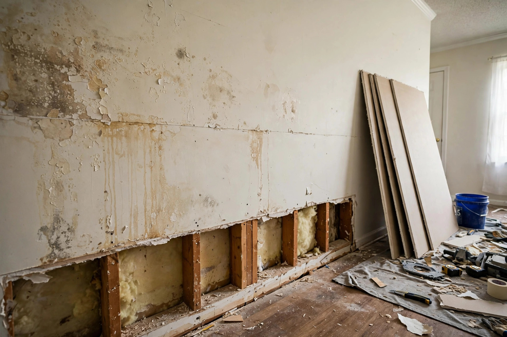

Water Damaged Drywall Repair in Boise, ID
Drywall is gypsum wrapped in paper — and that paper is mold food. Once it’s been soaked, the question isn’t whether to patch it, but how high to cut it and how dry the studs need to be before new board goes up.
- Flood cuts at a straight line above the wet zone
- Stud cavities dried and checked with a meter
- New board, tape, texture match and paint

Why wet drywall can’t just be left to dry
HealthHidden growth
- The back of the paper facing stays damp long after the front feels dry.
- The CDC links indoor mold to coughing, wheezing and worsened asthma.
- Insulation behind the board holds water like a sponge.
PropertyStructural & cosmetic
- Soaked gypsum loses strength and can crumble or sag on ceilings.
- Screws rust and pop; tape joints release.
- Stains bleed through ordinary paint within weeks.
Guidance behind the repair decisions
The cut-or-keep call depends on what kind of water it was and how long it sat.
Clean water, caught fast
Board may be dried in place if it’s firm, readings return to normal, and there’s no insulation behind it.
Clean water, sat too long
Mold risk rises sharply. Cut out wet sections and dry the cavity.
How post-flood drywall is rebuilt
Measure the wick line
Water climbs drywall well above the visible stain. Meters find the real top edge.
Flood cut
Straight cut above that line, baseboards pulled, wet insulation bagged out.
Dry the cavity
Studs and bottom plates dried to normal wood readings — often 2–4 days.
Hang, finish, paint
New board (mold-resistant at the bottom), seams taped, texture matched, primed and painted.
Drywall repair questions
How do I know if wet drywall needs to be replaced?
Press on it. If it’s soft, crumbles, bulges or the paper is peeling, it needs to come out. Firm board can sometimes be dried in place if the water was clean and it’s been less than two days.
Why cut drywall at 2 or 4 feet instead of just the stain?
Water wicks higher than the stain shows, and a straight cut at a standard height lets full or half sheets go back in cleanly with fewer seams to finish.
Can you match the texture on my walls?
Most Boise-area homes use orange-peel or knockdown texture. Both can be matched closely; older North End plaster walls need a different repair approach.
Is mold-resistant drywall worth it?
For the bottom of basement walls, bathrooms and laundry rooms, yes. Paperless or treated board resists mold far better than standard board if it gets wet again.